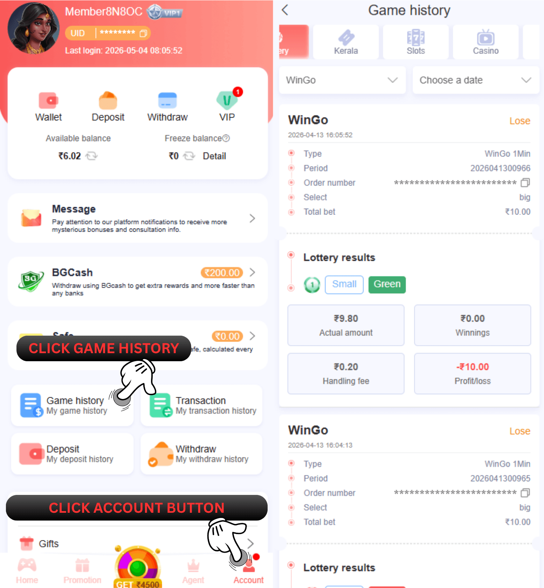

66 Lottery सट्टेबाजी का इतिहास
प्रश्न: मैं अपने द्वारा लगाए गए दांवों का इतिहास कैसे देख सकता हूँ?
उत्तर: नमस्कार, जिन खेलों में आपने भाग लिया है उन पर दांव की जांच करने के लिए कृपया अकाउंट पर क्लिक करें और बेट माई बेटिंग हिस्ट्री का चयन करें। धन्यवाद

प्रश्न: बेट मेनू का उपयोग किस लिए किया जाता है?
उत्तर: बेट मेनू के लिए आप 66 Lottery पर खेले जाने वाले सभी गेम पर अपनी गतिविधि बेट की जांच करें और लॉटरी के लिए आप उस मेनू पर अपने द्वारा किए गए सभी विवरण बेट रिकॉर्ड देख सकते हैं, तीसरे पक्ष के गेम के लिए यदि आप सभी विवरण देखना चाहते हैं रिकॉर्ड सट्टेबाजी को सीधे गेम के अंदर जांचना चाहिए
एपीआई गेम्स में लगभग 5-30 मिनट लगते हैं! इतिहास की ओर लौटने के लिए